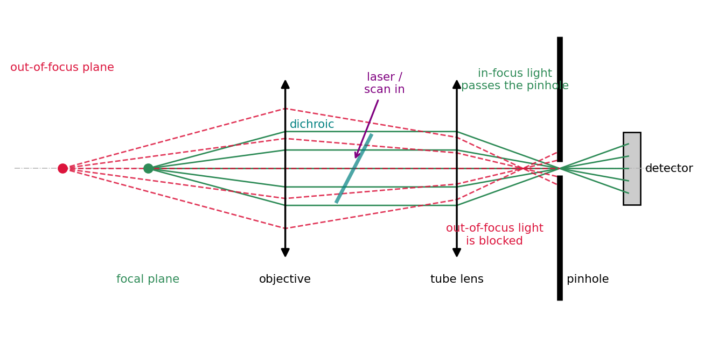
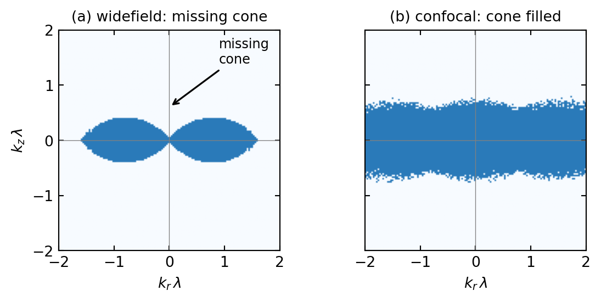
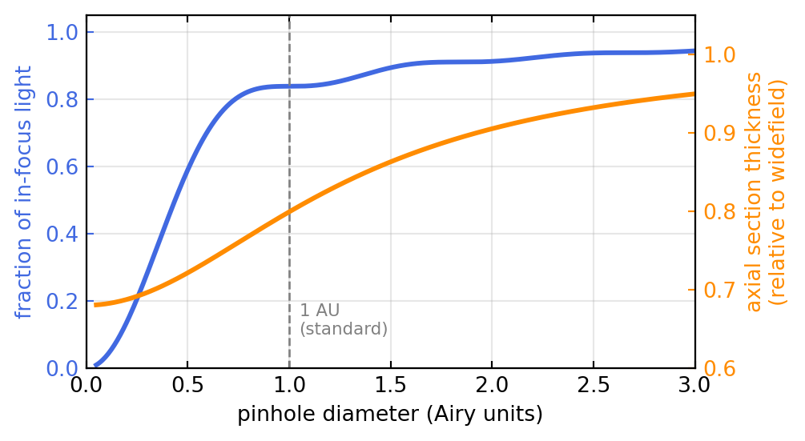
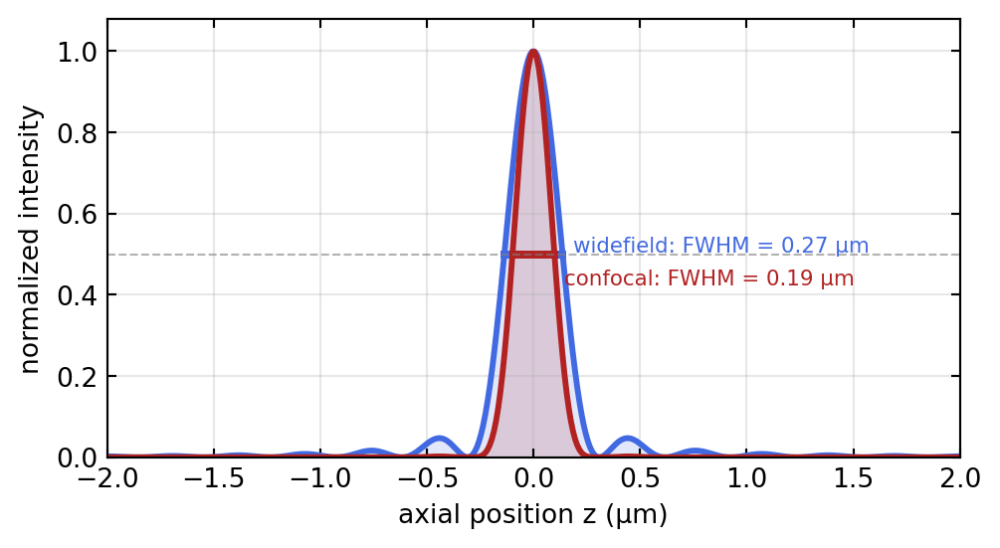

Confocal Microscopy & Wavefront Control
Introduction: Ideal Pupils and Real Aberrations
The earlier Fourier optics and microscopy lectures established the Optical Transfer Function (OTF) framework for understanding microscope resolution. The OTF connects the pupil function \(P(\mathbf{k})\) to image contrast through the autocorrelation: \[\text{OTF}(\mathbf{k}) = \frac{\mathcal{F}\{|\text{PSF}|^2\}(\mathbf{k})}{\text{OTF}(0)}\]
This lecture opens by building the confocal microscope, the instrument that fills the missing cone left by widefield fluorescence at the end of the previous lecture. It then asks what happens when the pupil is no longer ideal. Real microscopes are not so fortunate: a cover slip of wrong thickness causes spherical aberration, misalignment introduces coma, and high-NA systems suffer field curvature. All of these distortions modify the pupil function and hence degrade the OTF and resolution, and the rest of the lecture is about measuring and correcting them.
Learning objectives:
- Understand how confocal microscopy improves the OTF by combining illumination and detection in Fourier space
- Recognize that aberrations are pupil-plane defects: real \(P(\rho) = A(\rho) \exp(i W(\rho))\) where \(W\) is wavefront error
- Use Zernike polynomials to decompose and visualize aberrations on circular apertures
- Learn wavefront sensing (Shack-Hartmann) as a measurement tool
- Apply adaptive optics to correct aberrations and recover diffraction-limited performance
- Connect all concepts to practical tools used in the MoNa lab: SLMs, AOMs, and deformable mirrors
Confocal Laser Scanning Microscopy
The previous lecture, Phase Contrast & Fluorescence, ended with widefield fluorescence and its central weakness. Fluorophores above and below the focal plane are excited too and flood the image with an out-of-focus haze; in Fourier terms the three-dimensional OTF of a widefield microscope has a missing cone of unsupported spatial frequencies around the optical axis, so the instrument cannot section a thick sample. The confocal microscope removes the haze and fills the cone, and it is the natural starting point for this lecture: everything that follows, aberrations, wavefront sensing, and adaptive optics, is ultimately about keeping the confocal pupil clean.
Principle
The confocal microscope replaces wide illumination and a camera with a focused laser spot and a single detector behind a pinhole. The laser is focused to a diffraction-limited spot, and the pinhole in the image plane is placed exactly conjugate to that spot, hence “confocal”. Light from the focal point passes the pinhole; light from out-of-focus planes arrives spread out, mostly strikes the opaque screen around the pinhole, and is rejected. A scan mirror or acousto-optic deflector sweeps the spot across the sample, and the image is built point by point. Figure 2.1 traces the decisive detail: the focal plane and the pinhole are conjugate, so in-focus light converges onto the pinhole opening while out-of-focus light arrives as a broad blur and is blocked.
Why It Sections: the Product PSF
Two things now shape the image. The illumination concentrates light into the excitation PSF \(h_\text{ill}\), and the pinhole weights the collected light by the detection PSF \(h_\text{det}\). A point in the sample contributes only if it is both well illuminated and well imaged onto the pinhole, so the effective confocal PSF is the product
\[h_\text{conf}(x,y,z) = h_\text{ill}(x,y,z)\cdot h_\text{det}(x,y,z).\]
Multiplying two PSFs gives a narrower one, both laterally and, crucially, axially. In Fourier space the product of PSFs is a convolution of OTFs,
\[\text{OTF}_\text{conf}(\mathbf{k}) = \text{OTF}_\text{ill}(\mathbf{k}) \otimes \text{OTF}_\text{det}(\mathbf{k}),\]
and convolving the widefield OTF with itself fills in the missing cone: the confocal microscope transfers the axial frequencies that widefield cannot, which is the frequency-domain reason it can section. Figure 2.2 makes the filling visible, and Figure 2.4 shows the resulting axial narrowing directly.

Resolution, Sectioning, and the Pinhole
Because the confocal PSF is a product, its lateral and axial widths are smaller than widefield by roughly \(\sqrt{2}\):
\[\Delta x_\text{conf} \approx 0.4\,\frac{\lambda}{\text{NA}}, \qquad \Delta z_\text{conf} \approx 0.7\,\frac{\lambda}{\text{NA}^2}.\]
This ideal holds only for an infinitely small pinhole, which would also pass no light. The pinhole diameter, measured in Airy units (1 AU = the diameter of the Airy disk, \(1.22\,\lambda/\text{NA}\) in the image plane), is therefore the central tuning knob of every confocal microscope, and it trades signal against sectioning. Figure 2.3 shows the trade-off. A pinhole near 1 AU is the standard compromise: it already collects most of the in-focus light while still rejecting the bulk of the out-of-focus haze. Closing toward 0 approaches the theoretical resolution but starves the detector; opening past a few AU lets the signal in but lets the haze back too, and the instrument degrades toward widefield.

The axial narrowing itself is shown in Figure 2.4: the confocal axial response, being the square of the widefield one, is markedly tighter, and it is this narrowing that lets a confocal microscope collect a stack of optical sections through a thick specimen and reconstruct it in three dimensions.

Practical tips for confocal
- Start at 1 AU. Open wider only when the signal is too weak to image; close further only when you need the last bit of resolution and have photons to spare.
- Match the pixel to the resolution. Sample at about 2 to 2.5 pixels per resolution element (Nyquist); finer wastes photons and bleaches, coarser throws away resolution.
- Average against noise, not against bleaching. Frame or line averaging suppresses detector noise but adds dose; balance the two.
- A z-stack is only as good as its axial step, which should be about half the axial FWHM.
Fast Beam Scanning
To turn point detection into an image the focused spot must be scanned across the specimen. Galvanometric mirrors, electromagnetically driven mirrors that deflect the beam in \(x\) and \(y\), are the standard solution and reach kilohertz line rates, fast enough for video-rate imaging. Acousto-optic deflectors diffract the beam off a tunable acoustic grating travelling through a crystal; they have no moving parts and switch in microseconds, at the price of a small frequency shift and a wavelength-dependent deflection. Both act in a plane conjugate to the objective back aperture (the pupil), so that tilting the beam there translates into a lateral displacement of the focus at the specimen, the same pupil-plane lever used throughout this lecture.
Two-Photon Excitation
Two-photon excitation reaches the same sectioning by a different route. Instead of a pinhole it uses a fluorophore that must absorb two infrared photons simultaneously to reach the excited state. Because the rate of this process scales as the square of the intensity, appreciable excitation happens only at the bright focus and essentially nowhere else; out-of-focus fluorophores are never excited, so there is nothing to reject and no pinhole is needed. The squared intensity dependence narrows the effective excitation PSF just as the product PSF does in confocal, giving comparable sectioning. The decisive advantage is that the long infrared wavelength (700 to 1000 nm) scatters far less in tissue, so two-photon microscopy reaches several times deeper into living samples, which is why it dominates intravital and neuroscience imaging.